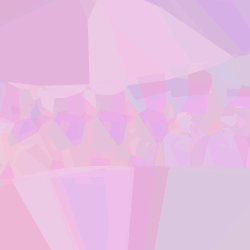
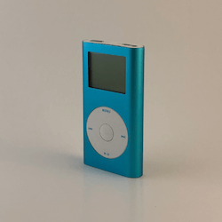

PCoTandy
co-webmain @ pcotandy. code and design. websites, visuals, proofs of conceptTree Simulator
visuals for kat's graduate recital packaged as a fun 3D tool!

Another Day Visualizer
visualizer for sam walters...it does more than just float...take a listen :)
EV1 Visualizer
visualizer for EV1 release. Released with single by LE1TandiPods
repairing discarded iPon nano 2nd gens, the cheapest and hardest iPod to fix

Windchime Calculator
make wonderfully tuned wind chimes with some helpBlogipode
one day i'm going to create a blog ecosystem for the 2x20s that will save us allWebring
a webring for the people's coalition of tandy
HELLO